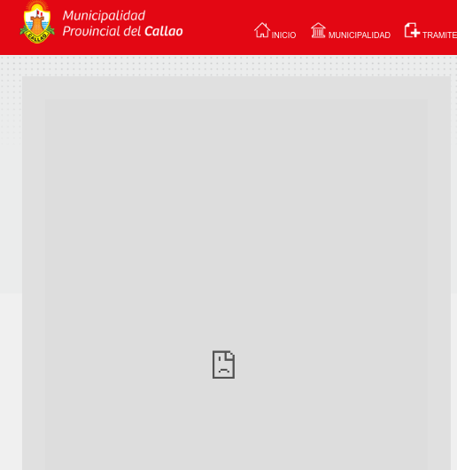

GET
/tramites/papeletas/listados.php?transporte1=1&txtbuscar=5989238A&buscar=Buscar

desde papeleta 0 000 000 A
hasta papeleta 0 577 071 A
Python, Pandas, SQLite, Google Maps.
import pandas as pd
from sqlalchemy import create_engine
# connect to our Sqlite database
db = create_engine("sqlite:///papeletas.sqlite")
# most common ticket
df = pd.read_sql("SELECT infraccion FROM papeletas", db)
total_tickets = df.count()
print(total_tickets)
infraccion 117261
dtype: int64
most_common = df['infraccion'].value_counts()
print(most_common.head(10))
L7 9346
G28 7714
G57 7051
G58 6249
G2 5425
G31 4146
M3 3363
M27 3208
G47 3046
G7 2975
Name: infraccion, dtype: int64
# number of unpaid tickets by day
df = pd.read_sql("SELECT * FROM papeletas", db)
data_time = pd.to_datetime(df['fecha_infraccion'], format="%Y-%m-%d")
number_tickets_by_date = data_time.value_counts()
number_tickets_by_date.plot()
import pandas as pd
from sqlalchemy import create_engine
# connect to our Sqlite database
db = create_engine("sqlite:///papeletas.sqlite")
# most common ticket
df = pd.read_sql("SELECT infraccion FROM papeletas", db)
total_tickets = df.count()
print(total_tickets)
infraccion 117261
dtype: int64
Después:
infraccion 309653
dtype: int64
most_common = df['infraccion'].value_counts()
print(most_common.head(10))
Antes: Después:
L7 9346 M20 90641
G28 7714 D01 19367
G57 7051 G11 12682
G58 6249 G4 12623
G2 5425 M17 10641
G31 4146 L7 9547
M3 3363 G47 9126
M27 3208 G28 8150
G47 3046 G41 7934
G7 2975 G57 7766
Name: infraccion, dtype: int64 Name: infraccion, dtype: int64
# number of unpaid tickets by day
df = pd.read_sql("SELECT * FROM papeletas", db)
data_time = pd.to_datetime(df['fecha_infraccion'], format="%Y-%m-%d")
number_tickets_by_date = data_time.value_counts()
number_tickets_by_date.plot()
# number of unpaid tickets grouped by month
from datetime import datetime
key = lambda x: datetime.strptime(x.strftime("%Y-%m") + "-01", "%Y-%m-%d")
data_time = pd.to_datetime(df['fecha_infraccion'], format="%Y-%m-%d")
ts = data_time.map(key)
ts.value_counts().sort_values(ascending=True).plot(title="Número de papeletas por mes")
lugar_infraccion
0 ovalo centenario gambetta 1 - callao
1 a. more caceres gambetta - ventanilla
2 p. elektra y gambetta - ventanilla
3 p. telefono gambetta - ventanilla
4 ovalo elektra con gambetta - callao
5 nestor gambetta of rentas - callao
6 paradero nestor gambetta - ventanilla
7 ov ventanilla av gambetta - callao
8 av del bierzo y av n. gambetta - callao
9 ov ventanilla con av gambetta - callao
10 a m de caceres con gambetta - callao
11 del bierzo gambetta - callao
12 del bierzo c0n gambetta - 30319412
13 av. ferroles y av. nestor gambetta - callao
GOOGLE_MAPS_URL_BASE = "https://maps.googleapis.com/maps/api/geocode/json?address="
df = pd.read_sql("""SELECT lugar_infraccion
FROM papeletas
WHERE latitude IS NOT null""", db)
places = df['lugar_infraccion'].value_counts(normalize=True) * 100
print(places.head(10))av. nestor gambetta - callao 16.628903
av. faucett - callao 6.163049
av faucett y av venezuela - callao 5.832238
av faucett y av argentina - callao 4.617755
av faucett y av canta callao - callao 3.321702
av faucett y av morales duarez - callao 3.131373
avenida tomas valle 34, Callao 2.576245
callao - callao 1.529433
av pedro beltran - callao 1.361762
aeropuerto - callao 1.241673
Name: lugar_infraccion, dtype: float64
# Av. Faucett and Av. Venezuela
radius = 0.0006
lat, long = -12.062355, -77.097157
lat_north, lat_south = lat + radius, lat - radius
long_east, long_west = long + radius, long - radius
df = pd.read_sql("""
SELECT lugar_infraccion, infraccion FROM papeletas WHERE
{0} <= latitude AND latitude <= {1} AND
{2} <= longitude AND longitude <= {3}
""".format(lat_south, lat_north, long_west, long_east), db)
print(df.head())
lugar_infraccion infraccion 0 av faucett y av venezuela - callao C17 1 av faucett y av venezuela - callao C17 2 av faucett y av venezuela - callao E02 3 av faucett y av venezuela - callao A12 4 av faucett y av venezuela - callao C32
# Av. Faucett and Av. Venezuela
most_common = df['infraccion'].value_counts(normalize=True)
print(most_common.head() * 100)
G57 16.057660
E22 6.537043
L7 5.129065
G2 4.592692
B09 4.257459
Name: infraccion, dtype: float64